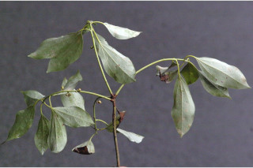
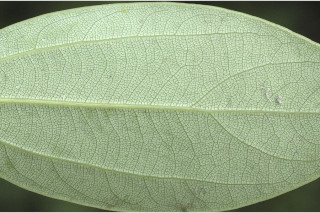
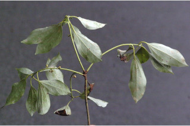
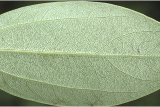

Trees up to 16 m tall.
16 ಮೀ.ವರೆವಿಗೆ ಬೆಳೆಯುವ ಮರಗಳು.
16 മീറ്റര് വരെ ഉയരമുളള മരങ്ങള്.
மரங்கள் 16 மீ. உயரம் வரை வளரக்கூடியது.
Bark light brown, lenticellate; blaze cream with orange speckles.
ತೊಗಟೆ ತೆಳು ಕಂದು ಬಣ್ಣದಲ್ಲಿದ್ದು ವಾಯುವಿನಿಮಯ ಬೆಂಡು ರಂಧ್ರ ಸಮೇತ -ವಾಗಿರುತ್ತವೆ;ಕಚ್ಚು ಮಾಡಿದ ಜಾಗ ಕೆನೆ ಬಣ್ಣದಲ್ಲಿದ್ದು ಕಿತ್ತಳೆ ಬಣ್ಣದ ಚುಕ್ಕೆಗಳನ್ನು ಹೊಂದಿರುತ್ತದೆ.
ശ്വസനരന്ധ്രങ്ങളുളള, ഇളം തവിട്ട് നിറത്തിലുളള പുറംതൊലി; വെട്ട്പാടിന് ഓറഞ്ച് കുത്തുകളുളള ക്രീം നിറമാണ്.
மரத்தின் பட்டை வெளிறிய ப்ரவுன் நிறமானது, லெண்டிசெல் கொண்டது; உள்பட்டை கிரீம் நிறமானது மற்றும் ஆரஞ்சு நிறமான புள்ளிகளுடையவை.
Young branchlets terete, glabrous.
ಎಳೆಯ ಕಿರುಕೊಂಬೆಗಳು ದುಂಡಾಗಿದ್ದು ರೋಮರಹಿತವಾಗಿರುತ್ತವೆ.
അരോമിലമായ, ഉരുണ്ട, ഇളംഉപശാഖകള്.
சிறிய நுனிக்கிளைகள் குறுக்குவெட்டுத் தோற்றத்தில் வளையமானது, உரோமங்களுடையது.
Leaves simple, alternate, spiral; petiole 3 (-6) cm long, planoconvex in cross section, glabrous; lamina 7.5-13 x 3.5-5.5 cm elliptic-ovate or broadly elliptic, apex acute-acuminate, base acute - attenuate, glabrous, glaucous beneath, scrobiculate above, coriaceous; trinerved just above the base, with ca. 3 pairs of secondary_nerves; tertiary_nerves distantly percurrent; higher order nerves closely reticulate.
ಎಲೆಗಳು ಸರಳವಾಗಿದ್ದು ಪರ್ಯಾಯ ಮತ್ತು ಸುತ್ತು ಜೋಡನಾ ವ್ಯವಸ್ಥೆಯಲ್ಲಿ ಇರುತ್ತವೆ;ತೊಟ್ಟುಗಳು 3(6) ಸೆಂ.ಮೀ. ಉದ್ದ ಹೊಂದಿದ್ದು ಅಡ್ಡಸೀಳಿದಾಗ ಸಪಾಟ ಪೀನ ಮಧ್ಯದ ಕಾರದಲ್ಲಿರುತ್ತವೆ ಮತ್ತು ರೋಮರಹಿತವಾಗಿರುತ್ತವೆ; ಪತ್ರಗಳು 7.5-13 X 3.5 – 5.5 ಸೆಂ.ಮೀ.ವರೆಗಿನ ಗಾತ್ರ ಹೊಂದಿದ್ದು ಅಂಡವೃತ್ತ-ಅಂಡ ಅಥವಾ ವಿಶಾಲ ಅಂಡವೃತ್ತದ ಆಕಾರ ಹೊಂದಿರುತ್ತವೆ; ತುದಿ ಚೂಪು-ಕ್ರಮೇಣ ಚೂಪು ಮಾದರಿಯಲ್ಲಿದ್ದು ಬುಡ ಚೂಪು – ಒಳಬಾಗಿದ ರೀತಿಯಲ್ಲಿರುತ್ತದೆ;ಪತ್ರಗಳು ರೋಮರಹಿತವಾಗಿದ್ದು ತಳಭಾಗ ಮಾಸಿದ ಬೂದು ಹಸಿರು ಬಣ್ಣ ಹೊಂದಿರುತ್ತದೆ, ಪತ್ರದ ಮೇಲ್ಭಾಗ ಕುಳಿಗಳನ್ನು ಹೊಂದಿರುತ್ತದೆ; ಮೇಲ್ಮೈ ತೊಗಲನ್ನೋಲುವ ಮಾದರಿಯಲ್ಲಿರುತ್ತದೆ;ಪತ್ರದ ಬುಡದ ಸ್ವಲ್ಪ ಮೇಲೆ 3 ನಾಳಗಳು ಇದ್ದು ಅಂದಾಜು 3 ಎರಡನೇ ದರ್ಜೆಯ ನಾಳಗಳ ಸಮೇತವಿರುತ್ತವೆ; ಮೂರನೇ ದರ್ಜೆಯ ನಾಳಗಳು ಅಂತರ ಹೊಂದಿದ್ದು ಎಲೆ ದಿಂಡಿಗೆ ಅಡ್ಡವಾಗಿ ಕೂಡುತ್ತವೆ;ಉನ್ನತ ದರ್ಜೆಯ ನಾಳಗಳು ಪತ್ರಗಳು ತೀರಾ ಸನಿಹವಾಗಿದ್ದು ಜಾಲಬಂಧ ನಾಳ ವಿನ್ಯಾಸ ಹೊಂದಿರುತ್ತವೆ.
ലഘുവായ ഇലകള്, ഏകാന്തരക്രമത്തില്, സര്പ്പിളമായടുക്കിയതാണ്; ഛേദത്തില്, ഒരുഭാഗം പരന്നും മറുഭാഗം ഉരുണ്ടുമിരിക്കുന്ന, അരോമിലമായ ഇലഞെട്ടിന് 3 (6 വരെ) സെ.മീ നീളം; പത്രഫലകത്തിന് 7.5 സെ.മീ തൊട്ട് 13 സെ.മീ വരെ നീളവും 3.5 സെ.മീ തൊട്ട് 5.5 സെ.മീ വരെ വീതിയും, ആകൃതി ദീര്ഘവൃത്തീയ- അണ്ഡാകാരമോ, വീതിയേറിയ ദീര്ഘവൃത്താകൃതിയോ ആണ്, പത്രാഗ്രം നിശിത ദീര്ഘാഗ്രമാണ്, പത്രാധാരം നിശിതമായ വിധത്തില് നേര്ത്തവസാനിക്കുന്നതോ ആണ്, അരോമിലം, കീഴെ നീലരാശി കലര്ന്നതാണ്, മുകളില് ചെറുകുഴികള് നിറഞ്ഞതാണ്, ചര്മ്മില പ്രകൃതം; ആധാരത്തിന് തൊട്ട് മുകളില് നിന്നും പുറപ്പെടുന്ന 3 ഞരമ്പുകളുണ്ട്, ഏതാണ്ട് 3 ജോഡി ദ്വിതീയ ഞരമ്പുകളുണ്ട്; വിദൂരപെര്കറന്റ് വിധത്തിലുളള ത്രിതീയ ഞരമ്പുകള്; മറ്റ് ചെറ് ഞരമ്പുകള് അടുത്ത ജാലിതമാണ്.
இலைகள் தனித்தவை, மாற்றுஅடுக்கமானவை, சுழல் போன்று அமைந்தவை; இலைக்காம்பு 3 (-6) செ.மீ., நீளமானது, குறுக்குவெட்டுத் தோற்றத்தில் பிளேனோகான்வக்ஸ், உரோமங்களற்றது; இலை அலகு 7.5-13 X 3.5-5.5 செ.மீ., நீள்வட்டம்-முட்டை அல்லது அகன்ற நீள்வட்ட வடிவானது, அலகின் நுனி கூரியது-அதிக்கூரியது, அலகின் தளம் கூரியது-அட்டனுவேட், அலகின் கீழ்பரப்பு உரோமங்களற்றது மற்றும் மெழுகு பூசியது போன்றது அல்லது சாம்பல் கலந்த நீல நிறமானது (க்களாக்கஸ்), மேல்பரப்பில் ஸ்கராபிகுலேட், கோரியேசியஸ்; மூன்று நரம்புகள் அலகின் தளத்திற்கு சற்று மேலேமைந்தது, 3 பக்கநரம்புகளை இரண்டாம் நிலை நரம்புகளாக கொண்டவை; மூன்றாம் நிலை நரம்புகள் அகன்ற பெர்க்கரண்ட்; மற்ற சிறு நரம்புகள் நெருக்கமான வலைப்பின்னல் போன்றது.
Inflorescence umbels, axillary or lateral clusters.
ಪುಷ್ಪಮಂಜರಿ ಪೀಠಛತ್ರ ಮಾದರಿಯಲ್ಲಿದ್ದು ಅಕ್ಷಾಕಂಕುಳಿನಲ್ಲಿರುವ ಅಥವಾ ಪಾರ್ಶ್ವದಲ್ಲಿನ ಗುಚ್ಛಗಳಲ್ಲಿರುತ್ತವೆ.
പൂങ്കുലകള്, കക്ഷീയമോ പാര്ശ്വസ്ഥമോ ആയ കൂട്ടങ്ങളായി ഉണ്ടാകുന്നു ഛത്രമഞ്ജരികളാണ്.
மஞ்சரி அம்பல் வகை, இலைக்கோணங்களில் அல்லது பக்கவாட்டில் கூட்டமாகமைந்தவை.
Berry, globose, to 1 cm across; fruiting_perianth cupular; seed 1.
ಬೆರ್ರಿ ಗೋಳಾಕಾರದಲ್ಲಿದ್ದು 1 ಸೆಂ.ಮೀ. ವರೆಗಿನ ಉದ್ದ ಹೊಂದಿರುತ್ತದೆ; ಪುಷ್ಪಾವರಣ ಬಟ್ಟಲಿನ ರೀತಿ ಇರುತ್ತದೆ;ಬೀಜ 1.
ഒറ്റ വിത്തുളള കായ, സംയോജിതമായ ഫലപരിദളമുളള, 1 സെ.മീ വരെ കൂറുകേയുളള, ഗോളാകാര ബെറിയാണ്.
முழுச்சதைகனி (பெர்ரி), கோளவடிவானது; 1 செ.மீ. குறுக்களவுடையது, கோப்பை போன்ற ப்பீரியான்ந்த் கொண்டது; விதை ஒன்றுடையது.


 


